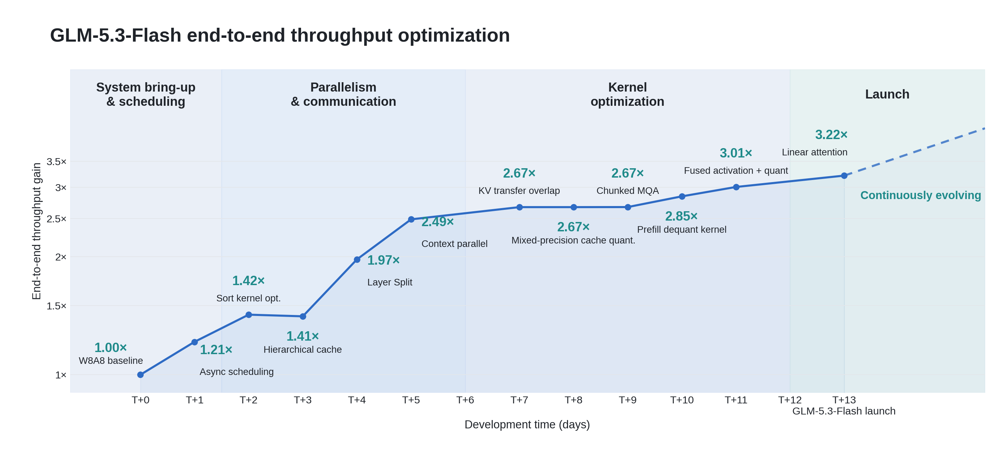
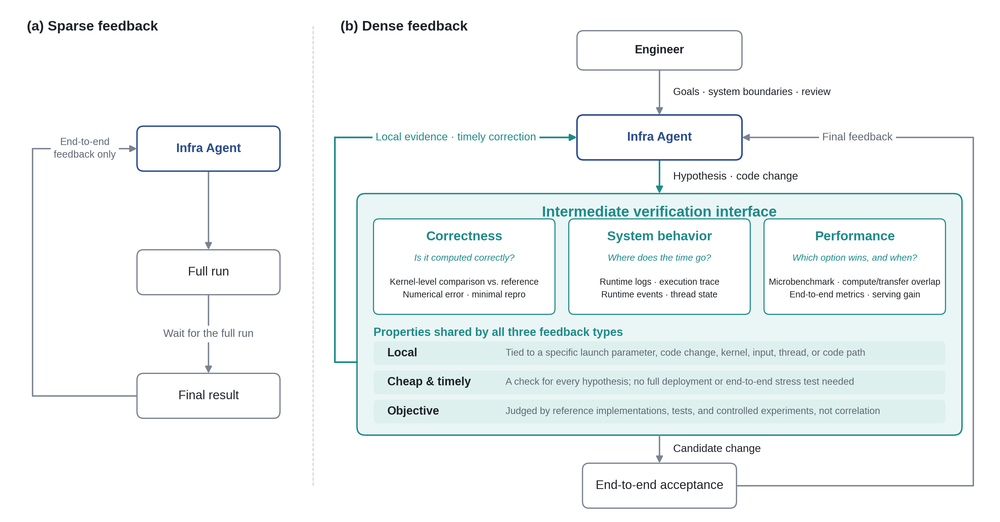
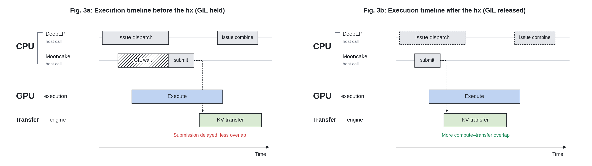
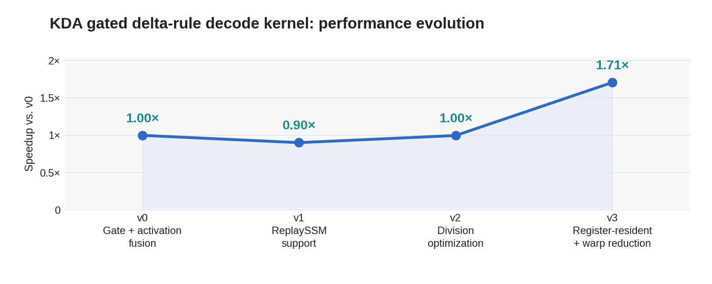

在开发 GLM 的过程中，模型偶尔会展现出令我们惊喜、甚至不安的能力。
2025 年 10 月，我们开始研究如何强化其网络安全能力。当时的推理很直接：网络安全是编程能力的自然延伸。一个能理解复杂代码的模型，也应该能理解其中的漏洞。我们没有预料到之后会发生什么。不到一年，安全合作伙伴用 GLM 在真实代码库中发现了数千个漏洞。模型开始重塑网络安全，同时也带来了此前不存在的风险。为了负责任地使用这项能力，我们不得不设计一套可信访问计划。
最近一次真正让我们震动的时刻，来自更根本的转变：GLM 正越来越多地参与构建 AI 本身。我们亲眼看到，模型完成了一项此前需要一队资深基础设施工程师数周才能完成的基建任务。当我们意识到这项工作将直接改变下一代模型的训练方式时，我们更加确信：我们的继任者，正是我们自己正在创造的 AI 系统。
坦率地说，在 GLM-4.7 之前，团队内部用 GLM 做编程，多少带着一点「自家孩子」的义务感。毕竟那是我们自己的作品。那时，编程方向的产品市场契合尚未到来。如今，GLM-5.3 已成为团队每个人不可或缺的日常编程伙伴，并稳步走向取代我们的位置。若这一趋势持续，给定足够的算力与时间，其终点将是一个能完全自主设计并训练自身继任者的系统。这就是所谓的递归自我改进（Recursive Self-Improvement，RSI）。
我们尚未到达那里，但其早期形态已经显现。本文记录的，便是这样一个早期样本。
用密集反馈驱动 Infra Agent 优化推理系统
把模型从新硬件上的首次成功运行，做到能稳定承载生产流量的高性能推理服务，是一项重大的系统工程。GLM-5.3-Flash 的上线走的正是这条路。我们在超过 10 万张国产 AI 加速器的集群上，从零搭建了一套完整的生产级推理服务。GLM-5.3-Flash 的全部生产推理都运行在这套系统上。
这并不容易。此前从未有人在如此规模上部署国产加速器集群。我们面临芯片显存容量与带宽相对有限的约束，同时还要支持全新的模型架构、100 万 token 上下文窗口，以及多模态请求。生态尚不成熟，内核支持不完整，许多本应写在文档里的细节只能靠猜。最终，这项工作完成了。它并非仅靠一队基础设施工程师完成——大量工作由 GLM-5.3 驱动的 Infra Agent 完成。
随后发生的事情已经为人熟知。GLM-5.3-Flash 以匿名模型名 Ox-Alpha，在 OpenCode 与 OpenRouter 上经受真实流量检验。上线不到一周，它就成为两个平台上使用量最高的模型，六天内处理了超过 62 万亿 token。
我们实施了一系列激进的内存优化，包括用算力换带宽、用通信换设备内存等定制方案。最终技术栈融合了多项关键技术：线性注意力与 LM Head 的节点内张量并行、ReplaySSM、W8A8 量化、基于 INT8/FP8/BF16 的混合精度缓存量化，以及 Layer Split。在此之上，我们引入了 Encode-Prefill-Decode（EPD）解耦架构。这些优化共同将端到端服务性能提升了约 3 倍。硬件利用率与单 token 成本达到了与主流 NVIDIA GPU 相当的水平。
在整个优化过程中，Infra Agent 的反馈闭环持续运转。GLM-5.3-Flash 从最初的模型适配到生产就绪用时不到两周，最终相对初始基线将端到端吞吐量提升了两倍。图 1 展示了 GLM-5.3-Flash 从首次成功运行到生产上线的性能轨迹。

在这一过程中，我们逐渐意识到：Infra Agent 的工程效能，不仅取决于模型的代码生成与推理能力，更取决于系统能否持续提供可追溯到具体原因的有用反馈。代码库只提供静态上下文。推理系统中的数值偏差、性能回退与未达优化目标，往往源于跨多层的动态交互，包括内核实现、并行策略、通信行为、内存管理与服务编排。
即便智能体能够理解整套代码库，变更后诸如「数值精度测试失败」「TTFT 上升 30%」或「输出吞吐下降 20%」这类反馈，仍会让它难以判断责任在哪一层、当前假设错在哪里、下一步该测什么。端到端指标能告诉智能体结果变差了，却解释不了为什么。
如何把稀疏的端到端结果，转化为细粒度、可归因、并能直接指导下一步行动的工程反馈？
从端到端指标到可归因反馈
传统推理系统优化并不缺测试、日志、性能分析工具或微基准。但这些通常散落在不同工具与工程阶段。经验丰富的工程师会根据压测结果决定下一步观察什么，逐步检查内核输出、执行时间线、通信事件或线程状态，并把不同工具中的信息串联起来。
对智能体而言，除非这些观察与验证方法被组织成可直接访问、可重复执行的工作流，否则它真正用得上的反馈依然稀疏。它可能知道吞吐未达目标，却仍无法判断：
- 是某个内核耗时过长，还是计算设备在空转？
- 是 KV Transfer 本身太慢，还是上层调度未能及时推进传输？
- 某项优化对哪些输入形状有效，又在什么条件下会回退？
单一端到端指标无法回答这些问题。因此，我们将正确性测试、运行时日志、执行轨迹、运行时事件、微基准与端到端指标一并纳入智能体的迭代工作流，把完整的系统优化过程拆解为可局部观察、局部验证的步骤。内核级对比用于验证数值正确性；微基准衡量特定输入条件下的局部性能；执行轨迹与运行时事件揭示计算、等待与通信之间的时序关系。智能体可以为当前假设选择合适的验证方法，而不必每次改动后都等待完整服务部署与端到端压测。
我们称这种方法为「密集反馈」。这里的「密集」并不意味着把尽可能多的日志和指标塞给智能体，而是强调三个特征。
- 第一，反馈必须足够局部。
- 第二，反馈必须获取成本低、及时可得。
- 第三，反馈必须支持客观验证。
这三点共同决定反馈是否可行动。正确性反馈回答：「计算是否正确？」系统行为反馈识别：「时间花在哪里？」性能反馈判断：「哪种做法更好，以及在什么条件下更好？」验证方法不必遵循固定顺序，而应匹配当前假设，使每一次实验都回答一个具体问题。
局部验证与端到端测试在这一过程中扮演不同角色。前者尽早淘汰错误或无效的改动，并识别值得继续推进的候选方案；后者确认局部收益是否转化为真实的服务提升，以及提案变更在实际负载下是否引入新的回退。
基于这些原则，GLM-5.3-Flash 的上线建立了工程师、Infra Agent 与实验环境共同参与的优化闭环。工程师定义目标与系统边界；智能体负责分析、提出假设并修改代码；实验环境提供分层、及时、可验证的反馈。三者一起，把原先依赖工程师经验串联起来的诊断过程，变成了智能体可以持续执行的工程工作流。

这一进展既包括直接提升吞吐的性能优化，也包括未必立刻改善吞吐、但对正确且可靠上线至关重要的缺陷修复。以下三个案例说明：密集反馈如何帮助智能体确保系统「算得对」、解释「为何不够快」，并探索「如何更快」。
正确性反馈：帮助智能体判断模型是否算对
推理性能优化必须以数值正确性为基础。对智能体而言，验证始于精确弄清推理引擎实际执行了哪些计算。高层并行策略会改变内核输入如何切分、走哪条执行路径，以及结果如何合并。仅在未切分条件下测试内核输出，不足以覆盖实际部署中的行为。
为此，我们建立了从推理引擎并行策略到内核实现的映射，把系统级部署配置转化为智能体可以逐项验证的内核级任务。这一映射帮助智能体识别：某并行配置涉及哪些内核、输入如何切分，以及哪些计算路径需要与未切分实现对比。
在此基础上，我们让智能体在不同切分与未切分执行路径之间比较数值精度。对于相同输入，在对齐计算语义与输出位置后，检查不同执行方式的结果是否满足数值误差容限。这样就把并行配置、内核路径与观测到的误差连接起来。一旦测试暴露偏差，智能体可以继续追查对应的切分方案与计算路径，而不必从整个模型层面重新开始诊断。
正是在这一内核验证过程中，我们发现了 KDA 内核 Context Parallelism（CP）路径上的数值精度问题。CP 与非 CP 结果的差异，将调查引向并行执行所引入的状态传播与合并计算。
CP 切分需要合并来自不同上下文分片的状态，其核心计算可简化为对 tl.dot 的调用，并通过设置 input_precision="tf32x3" 来控制精度。在此情境下，反馈环境在问题暴露之前就开始发挥作用。从并行策略到内核的映射定义了需要测什么；切分与未切分路径的对比暴露了数值偏差；对计算精度的分析解释了偏差来源；回归测试则为持续验证改动提供了依据。对智能体而言，这一工作流把系统级并行设计变成了可执行、可追溯的正确性任务。局部验证通过后，候选实现仍须回到目标部署环境，接受模型级精度与服务性能的最终验收。
系统行为反馈：定位 KV Transfer 并发瓶颈
对于系统级性能问题，明确的测试场景与性能约束，能为智能体识别异常、选择分析方向提供起点。
我们的推理优化工程师为智能体定义了测试场景，包括单独 Prefill、Prefill + KV Transfer，以及单独 Decode，用以隔离不同执行阶段及其组合的性能影响。他们还为每个场景设定了验收标准。例如，在相同负载下，Prefill + KV Transfer 与仅 Prefill 基线之间的性能差距不应超过 5%。
然而，智能体发现在某些场景下性能差距超过了 20%。这一反馈把调查收窄到 KV Transfer 引入的额外开销与并发交互。智能体随后详细检查了 KV Transfer 时间线，并识别出异常：在这些场景中，Python 侧的 KV Transfer 执行从未与 DeepEP 的 dispatch/combine 调用区间重叠。
关键在于：进入 C++ 并不会自动释放 GIL。当这些调用持有锁时，同一进程中负责 Mooncake Transfer 的 Python 线程无法及时获取 GIL。传输任务的调度与提交因此被延迟，KV Transfer 与后续计算重叠的机会随之减少。即便底层传输机制支持异步执行，上层提交若被阻塞，预期的并行性也难以充分兑现。
关键修复是在相关 C++ 执行区间释放 GIL，让 Mooncake Transfer 的 Python 线程能及时推进任务。修复必须同时对照时间线与原先的性能约束加以验证：前者检查调度与传输是否获得了与计算重叠的机会；后者判断该改动是否改善了实际服务性能。在相同测试条件下，修复后 Prefill + KV Transfer 与仅 Prefill 之间的性能差距降到了 1% 以下。

在这个案例中，性能约束首先把「未达预期」变成了清晰定义的测试偏差；时间线随后把调查收窄到两个组件之间的并发；最终，代码分析定位了 GIL 被持有的范围。密集反馈把端到端性能、跨层运行时行为与具体实现细节连接起来，为智能体分析的每一步提供证据。
性能反馈：立足已有内核优化经验，转化为系统级收益
内核优化必须回答两个问题：如何判断一项优化是否有效，以及到哪里寻找有希望的优化方向。
首先，内核性能必须在推理引擎的实际执行环境中评估。例如，给计算内核更多资源可能缩短其自身执行时间，却给 KV Transfer 内核留下更少资源，最终拖慢整条流水线。因此，智能体必须超越单个内核延迟，在目标负载、资源约束、任务重叠与端到端收益的语境中，确立正确的优化目标。
其次，大量优化经验沉淀在 SGLang、Flash Linear Attention、DeepGEMM 等项目的手写内核中。智能体需要从这些代码中提炼优化技术及其适用条件，为当前内核与目标硬件提出候选方案，并通过实验验证实际效果。已有代码提供优化方向；系统反馈决定这些优化在实践中是否站得住脚。
我们让 GLM-5.3 驱动的 Infra Agent 从不同代码库、编程语言与硬件平台上的已有内核中学习优化技术。通过增量与消融实验，它将这些技术提炼为包含适用条件、变换方法、资源约束与验证证据的「优化骨架」。面对新内核，智能体从这些骨架出发，再用性能分析与分层测试重新评估 tiling、访存与资源分配策略。通过验证的改动及其适用条件会回馈进骨架库。工程师主要定义目标与约束，并审阅涉及数值语义、并发行为与生产风险的关键变更。

图 4 展示了一个代表性 KDA Decode 内核的性能演进。引入 ReplaySSM 以算力换内存，导致内核执行时间从 v0 到 v1 首次上升。智能体的划分优化随后将 v1 的执行时间降低了 9.6%。接着，在收到「计算是主要瓶颈」的反馈后，Infra Agent 发现原始实现沿 V 维做 tiling，导致相同的 FP32 归一化与门控计算被重复四次。它将这些 tile 合并到单个线程块，把共享中间结果保留在寄存器中，并用一次 warp 级归约替代冗余的按 tile 计算。通过牺牲部分并行度，它从源头消除了冗余计算，相对 v2 取得了 1.71× 的加速。
在这个案例中，GLM-5.3 驱动的 Infra Agent 从已有实现中提炼优化经验，并应用到承载自身推理的内核上。它从骨架出发调优各个组件，用分层验证决定保留哪些改动，并依赖端到端性能确立其实际价值。通过验证的洞见再回流进骨架库。模型因此参与了优化自己的推理系统，而每一次部署积累的经验，又降低了下一轮优化所需的工程投入。
让反馈驱动行动，让实验检验假设
这三个案例共同表明：反馈的价值不在于数量，而在于能否帮助智能体回答眼前的问题。大量非结构化日志可能淹没关键信号；覆盖不全的性能分析可能导致错误归因；在微基准上有效的优化未必转化为端到端收益。因此，构建反馈环境不仅要提供测试、日志与性能数据，还要明确每类观察能支持怎样的判断、其局限何在，以及哪些结论必须通过进一步实验确认。
工程师在这一过程中有三项关键职责：定义优化目标与系统约束；构建智能体可直接使用的反馈环境；审阅涉及系统架构、异步并发与生产风险的关键变更。在此框架下，智能体提出假设、实施改动、运行实验，再依据反馈保留、修正或否决当前方案。正确性、稳定性与端到端性能共同构成最终验收标准。
回望 GLM-5.3-Flash 的上线，内核中的数值精度缺陷、跨越 Python/C++ 边界的并发问题，以及对关键内核的性能优化，分别代表了不同层次的工程挑战。通过局部测试、跨层观察与分层基准，最初模糊的异常被逐步转化为可检验的工程假设。复杂系统问题被拆解为一系列可观察、可实验验证、结果可归因的迭代。正是在这一反馈闭环中，智能体的编程与推理能力转化为可验证的工程进展。
模型优化系统；系统运行模型。
当然，我们尚未到达递归自我改进。选择目标、设定边界、评估风险，仍是人类的责任。我们相信，人类在很长一段时间里都应当守住这条线。但数字本身——两周、三倍吞吐、十万加速器——告诉我们：这条边界上的进展，不会因为我们希望它放慢而放慢。